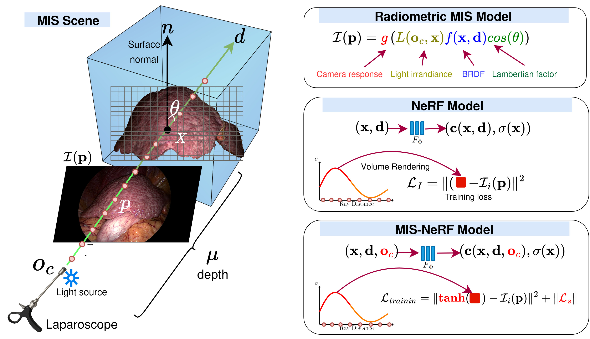

📝 About
Minimally-Invasive Surgery (MIS) reduces trauma compared to open surgery but is challenging for endophytic lesion localisation. Augmented Reality (AR) is a promising assistance technology that superimposes a preoperative 3D lesion model onto MIS images. This requires solving the difficult problem of 3D model-to-MIS-image registration. We propose MIS-NeRF, a Neural Radiance Field (NeRF) that provides high-fidelity intraoperative 3D reconstruction, used to bootstrap Iterative Closest Point (ICP) registration.
🔬 Method
Existing NeRF methods break down in MIS because of the moving light source and specular highlights. The proposed MIS-NeRF is adapted to these conditions. First, it incorporates the camera centre as an additional input to the radiance function, which allows MIS-NeRF to handle the moving light source. Second, it uses a modified volume rendering which handles specular highlights. Third, it uses a regularised compound loss to enhance surface reconstruction.

🩺 MIS-NeRF for Registration
The 3D surface reconstructed by MIS-NeRF is used to bootstrap Iterative Closest Point (ICP) registration, which aligns the preoperative 3D lesion model with the intraoperative MIS images for Augmented Reality.